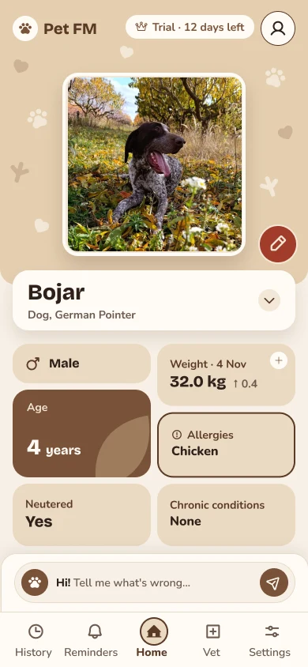
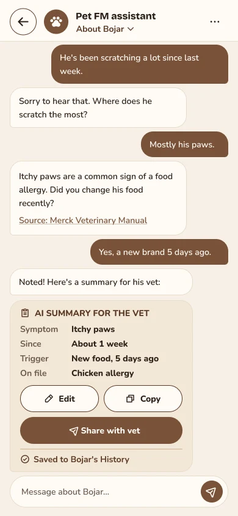
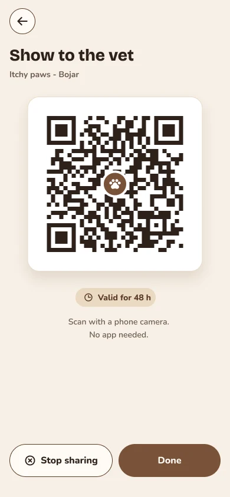
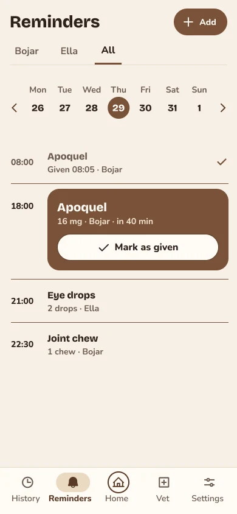
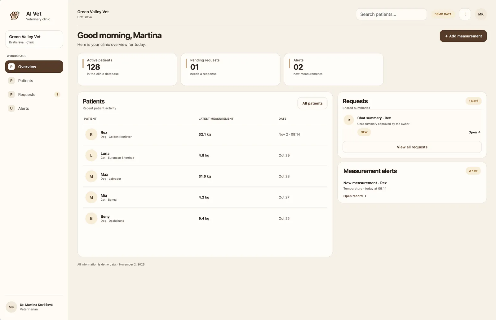
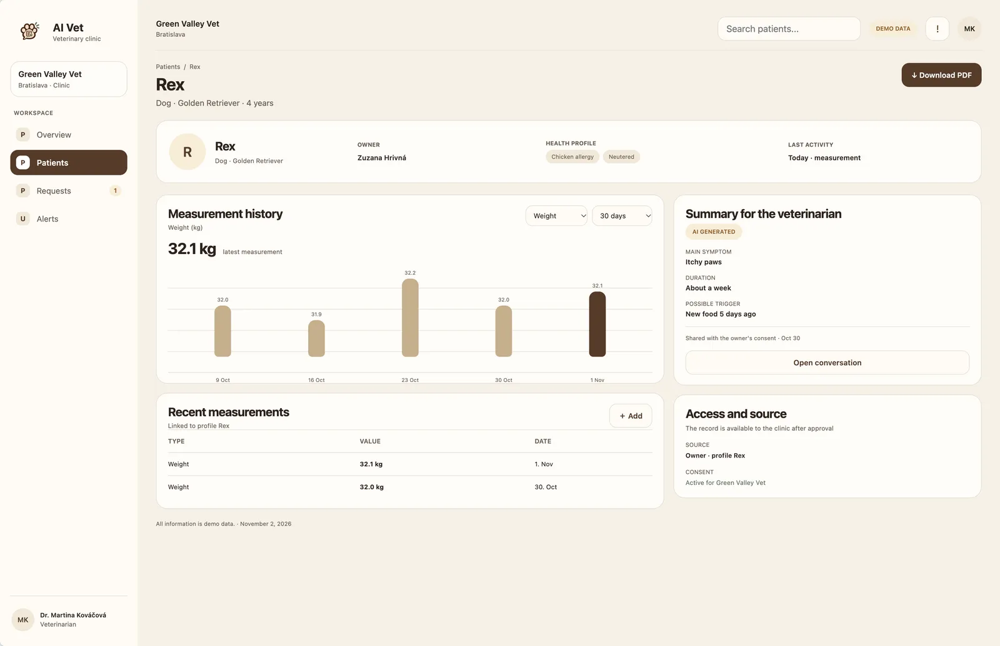
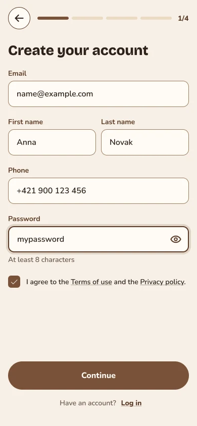
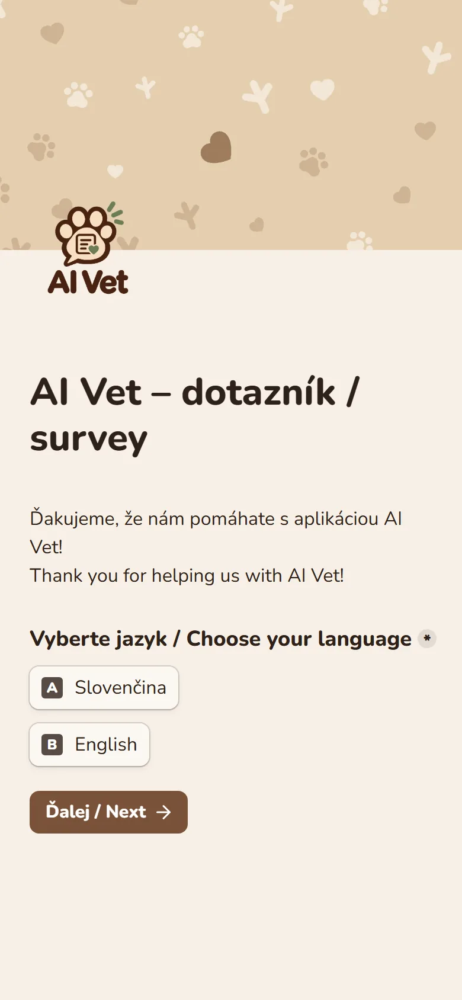

Návšteva veterinára, pripravená vopred.
Vet visits, prepared in advance.
AI Vet je mobilná aplikácia s AI asistentom. Pred návštevou sa majiteľa opýta, čo sa so zvieraťom deje, a pripraví z toho prehľadné zhrnutie pre veterinára. Po návšteve pripomenie lieky a uchová pokyny.
AI Vet is a mobile app with an AI assistant. Before a visit it asks the owner what is going on with their pet and turns it into a clear summary for the vet. Afterwards it reminds them about medication and keeps the instructions.
Postaviť AI asistenta, ktorý veterinárom pomôže s prácou pred návštevou aj po nej, nie ich nahradiť.
Build an AI assistant that helps vets with the work before and after the appointment, not one that replaces them.
Pre majiteľov
For owners
Jednoduchý rozhovor namiesto hľadania na internete. K veterinárovi prídu pripravení a po návšteve majú pokyny aj pripomienky po ruke.
A simple conversation instead of searching online. Owners arrive prepared and keep instructions and reminders at hand afterwards.
Pre veterinárov
For vets
Zhrnutie na jednu stranu, prečítané za pár sekúnd. Žiadny otvorený chat a žiadne notifikácie mimo pracovného času.
A one-page summary read in seconds. No open chat and no notifications outside working hours.
Bezpečne
Safe by design
AI nediagnostikuje a nikdy neupokojuje. Odpovedá všeobecne a so zdrojom, dáta ukladáme len na serveri v EÚ.
The AI never diagnoses and never reassures. It answers generally, with a source, and data stays on a server in the EU.
Majitelia nemajú informácie, veterinári nemajú čas.
Owners lack information, vets lack time.
Pred vývojom sme prešli recenzované štúdie a európske štatistiky. Tieto čísla ukázali, že aplikácia najviac pomôže pred návštevou a po nej.
Before development we reviewed peer-reviewed studies and European statistics. These numbers showed that the app helps most before and after the visit.
majiteľov psov nepodávalo lieky podľa pokynov
of dog owners didn't give medication as instructed
Odom et al., 2024návštev – len v toľkých sa vôbec hovorí o cene
of visits – the only ones where cost is discussed
Groves et al., 2022rast cien starostlivosti o zvieratá na Slovensku (2015–2025), v EÚ +36 %
rise in pet-care prices in Slovakia (2015–2025), EU +36%
Eurostat HICPTakto vyzerá AI Vet
This is AI Vet

1Profil zvieraťaPet profile
Všetko o zvieratku na jednom mieste a AI asistent vždy po ruke.
Everything about the pet in one place, with the AI assistant always at hand.

2AI rozhovorAI chat
Krátke otázky a na konci zhrnutie, ktoré si majiteľ skontroluje.
Short questions, ending in a summary the owner reviews.

3Zdieľanie s veterináromSharing with the vet
QR kód s časovo obmedzeným odkazom, bez inštalácie aplikácie.
A QR code with an expiring link, no app install needed.

4Pripomienky liekovMedication reminders
Pokyny po návšteve a označenie podanej dávky.
Post-visit instructions and marking a dose as given.
Čo AI Vet robí
What AI Vet does
Každá funkcia vychádza z konkrétneho zistenia v našom výskume potrieb majiteľov a veterinárov.
Each feature comes from a specific finding in our research into owners' and vets' needs.
A čo zámerne nerobí
And what it deliberately won't do
- nestanovuje diagnózugive a diagnosis
- neodporúča lieky ani dávkyrecommend medicines or doses
- neuvádza cenyquote prices
- nikdy nepovie „to nič nie je“say “it's nothing”
- nemá otvorený chat s veterináromopen a chat with the vet
Rozhovor pred návštevou
Pre-visit chat
AI sa pýta na príznaky, trvanie, jedlo a lieky, a to neutrálne, bez naznačovania príčiny. Na veľa otázok stačí ťuknúť.
The AI asks about symptoms, duration, food and medication, neutrally and without hinting at a cause. Many questions take a single tap.
Zhrnutie pre veterinára
Summary for the vet
Len to, čo povedal majiteľ, s odkazom na jeho správu. Majiteľ ho pred zdieľaním skontroluje.
Only what the owner said, linked to their message. The owner checks it before sharing.
Varovné signály
Warning signs
Pevné áno/nie otázky. Pri „áno“ aplikácia hneď odporučí zavolať na kliniku.
Fixed yes/no questions. On “yes”, the app tells the owner to call the clinic right away.
QR kód pre veterinára
QR code for the vet
Veterinár otvorí zhrnutie bez inštalácie. Odkaz platí obmedzený čas a dá sa zrušiť.
The vet opens the summary without installing anything. The link expires and can be revoked.
Pokyny a pripomienky liekov
Instructions & medication reminders
Pokyny po návšteve aj ako fotka, pripomienky a záznam podanej dávky.
Post-visit instructions, also as a photo, reminders and a record of each dose.
Rozhovor o nákladoch
Talking about cost
Majiteľ si zaškrtne, že chce hovoriť o cene. Veterinár to uvidí hneď v zhrnutí.
Owners can tick that they want to discuss cost, and the vet sees it at the top of the summary.
Dashboard pre kliniky
Clinic dashboard
Webový prehľad zhrnutí, ktoré majiteľ schválil. Prípady s varovným signálom sú navrchu.
A web view of owner-approved summaries, with warning-sign cases on top.
Dashboard pre veterinárov
Dashboard for vets
Webová aplikácia pre kliniky. Veterinár v nej vidí zhrnutia, ktoré mu majiteľ poslal, a históriu pacienta na jednom mieste.
A web app for clinics. Vets see the summaries owners send them and the patient's history in one place.


Prehľad dňa
Today at a glance
Nové žiadosti od majiteľov a upozornenia na merania hneď po prihlásení.
New owner requests and measurement alerts right after logging in.
Karta pacienta
Patient record
Merania, zdravotný profil a AI zhrnutie, ktoré majiteľ schválil, aj s celým rozhovorom.
Measurements, health profile and the owner-approved AI summary, with the full conversation.
Len so súhlasom
Consent first
Klinika vidí záznam až vtedy, keď ho majiteľ zdieľa, a súhlas môže kedykoľvek zrušiť.
The clinic sees a record only once the owner shares it, and consent can be revoked at any time.
Tím 13
Team 13
Sedem študentov inžinierskeho štúdia na Fakulte informatiky a informačných technológií STU v Bratislave.
Seven Master's students at the Faculty of Informatics and Information Technologies, STU Bratislava.
Pomôž nám s AI Vet
Help us shape AI Vet
Prekliknite si prototyp a povedzte nám, čo si o ňom myslíte. Odpovede sú anonymné a zaberú pár minút.
Click through the prototype and tell us what you think. Answers are anonymous and take a few minutes.

Prekliknite si aplikáciu
Click through the app
Interaktívny prototyp vo Figme – bez inštalácie, priamo v prehliadači.
An interactive Figma prototype – no install, right in your browser.

Ste majiteľ zvieraťa alebo veterinár?
Pet owner or vet?
Spoločný dotazník vás podľa jazyka a roly nasmeruje na správnu verziu.
The shared survey sends you to the right version based on your language and role.